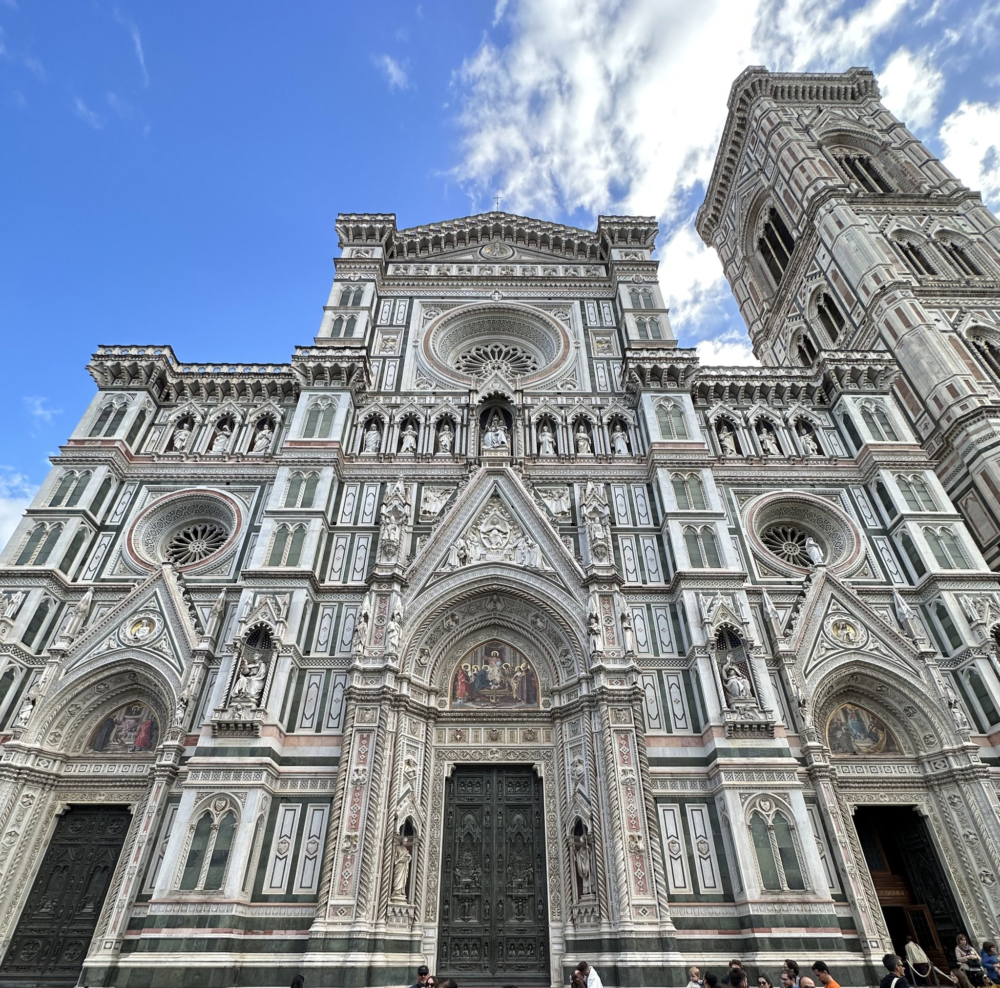
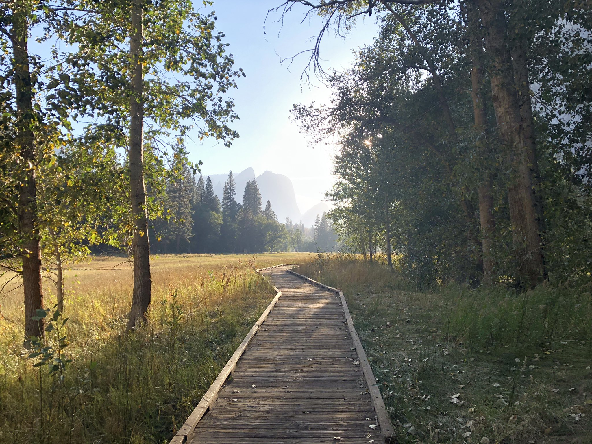
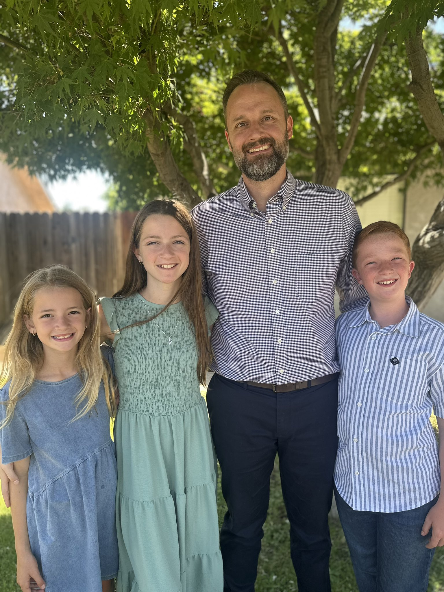

Photos

The intricate design of the Duomo in Florence is stunning. You keep "zooming in" expecting the surprises to end. But at every level, there is new beauty to behold.

Yosemite Valley, October, 2022

Father's Day, 2025